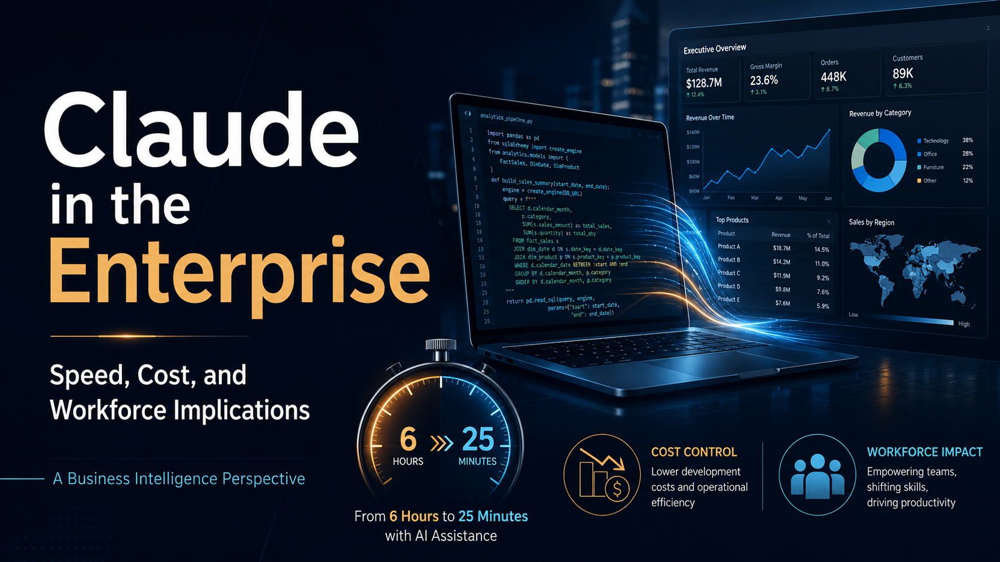

Although Claude entered the public domain on May 22, 2025, with the release of Sonnet 4 and Opus 4, I did not have the opportunity to gain hands-on experience with it until June 2026. Like many professionals working in enterprise environments, I began using Claude Code—Anthropic’s command-line coding tool—in combination with Visual Studio Code and GitHub.
On the very first day, I was genuinely discombobulated. I found myself asking: Is this real?
In my area of work, Business Intelligence, Claude demonstrated phenomenal performance. A task that would typically take a human developer approximately six hours was completed in about twenty-five minutes. Beyond speed, Claude also incorporated best practices, supported validation, and produced full documentation explaining both how the task was completed and why certain implementation choices were made.
There is little doubt that Claude offers remarkable speed and accuracy. However, the more important question is: at what cost? The direct implementation of Claude in enterprise environments raises two critical concerns: financial implications and workforce implications.
When discussing the financial burden of AI coding tools, one striking example is Uber reportedly exhausting its entire 2026 AI budget by April (Janakiram, 2026). This naturally raises the question: Is Claude truly that expensive?
A deeper look suggests that the issue is not simply the cost of Claude itself, but how it is deployed, governed, and used. Both management strategy and technical discipline play crucial roles in determining whether Claude remains affordable and sustainable:
dangerously skip permissions, may have contributed to excessive consumption, although this has not been officially confirmed.This example highlights an important lesson: every Claude practitioner should have at least a basic understanding of Claude’s architecture and operational model. Simply knowing how to run Claude commands or execute bash commands is not enough. Without architectural awareness, governance, and usage discipline, organizations may encounter unexpected financial consequences.
Enterprises considering Claude implementation should leverage programs like the Claude Partner Network (CPN)—which is free for business organizations to join—to better understand deployment strategies, cost controls, and best practices before scaling usage across teams.
It is increasingly evident that AI can write code faster, and in many cases better, than human developers. For tasks that do not require physical human interaction, AI is becoming an extremely powerful option.
According to The San Francisco Standard, the labor market has already begun to shift:
Hiring of new graduates at the fifteen largest U.S. technology companies has reportedly fallen by 55 percent since 2019 (Jetha, 2026).
In this increasingly precarious labor market, Nvidia CEO Jensen Huang’s definition of being "smart" becomes especially relevant. He describes intelligence not merely as technical expertise, but as the intersection of technical acumen and human empathy.
For those who want to remain relevant in IT, specific human skill sets are becoming more important than ever:
As of today, AI still lacks the full depth of human empathy, intuition, and contextual understanding. While AI systems will likely continue to develop many of these attributes in the coming years, the human ability to understand nuance, anticipate needs, and connect technical solutions with human realities remains our most important asset to work alongside—and stay ahead of—AI.